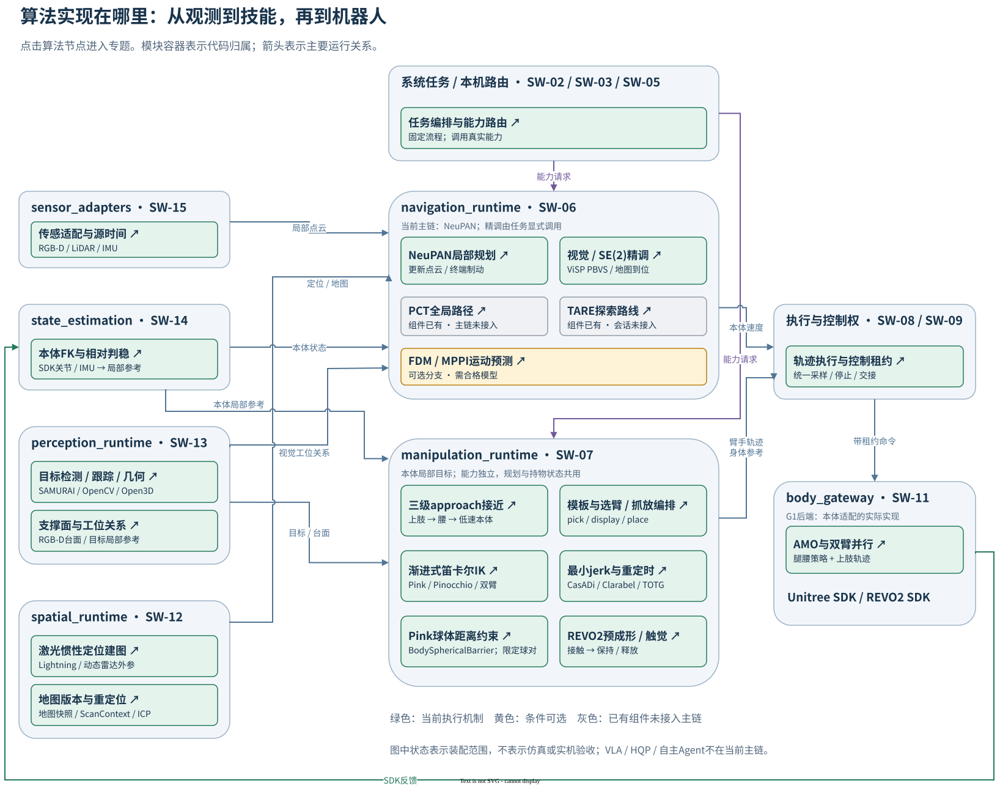
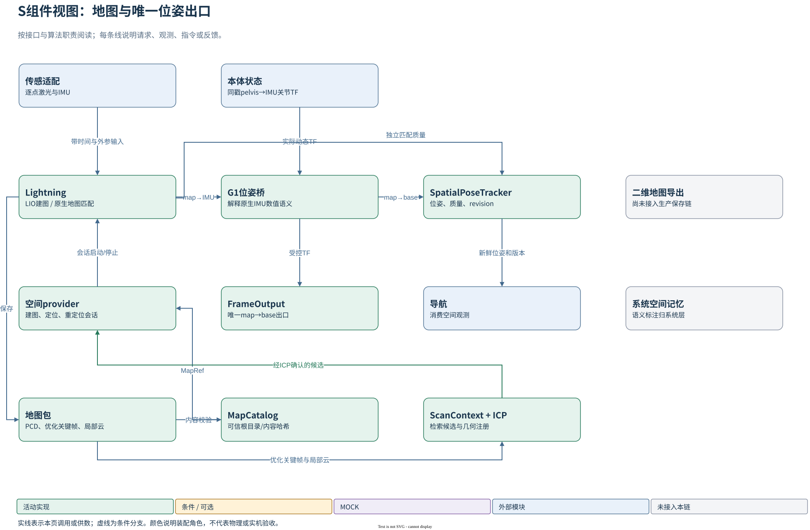
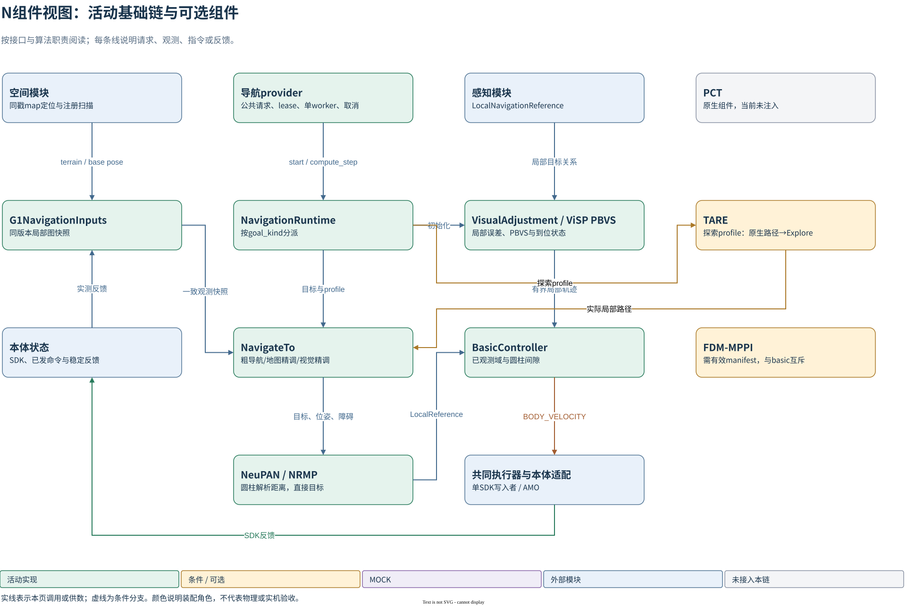
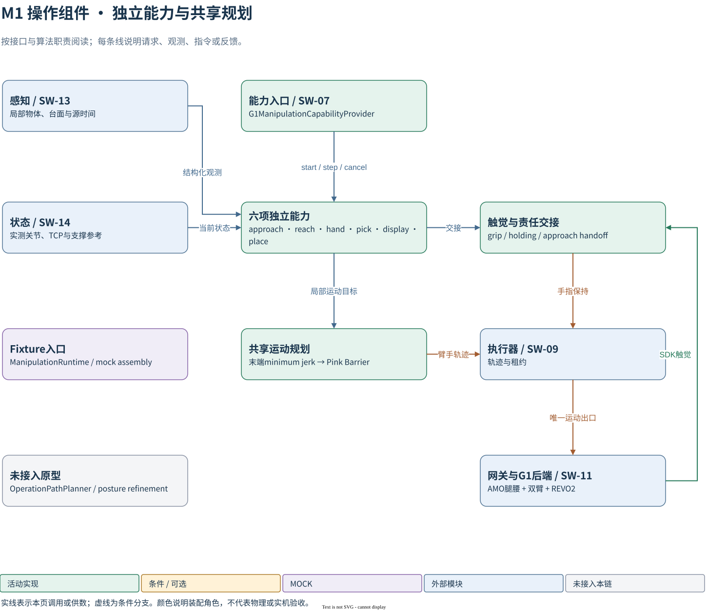

在 EmbodimentSpecPod 与 4+1
进程边界内，FACRI
将所有高频感知、定位、导航规划、全身动作执行与单机安全防线全部构建为纯
C++20 原生算法库（位于
src/robot_app/algorithms/），各运行域（src/robot_app/modules/）只负责按规定节拍驱动算法内核并将结果写回共享内存槽位。

空间定位与视觉跟踪（P1：robot_spatial_perc）

P1 进程以 10 Hz 周期并行运转两大核心感知子域：
- 体素 ICP 先验地图定位（
spatial_runtime/VoxelIcpLocalizer）：直接读取SalLidarWire最多6000个点，采用0.20 m体素降采样网格结合里程计初值求解高精度三维位姿SpatialPosePod（输出map_pos_xyz、map_quat_xyzw、tracking_quality0..100及雷达最近净空障碍距离min_lidar_clearance_m）。 - 视觉基准标志与 ROI 受限上报（
perception_runtime/AprilTagTracker）：基于alpha_pos = 0.35、alpha_rot = 0.35的指数滤波与严格重投影误差上限（max_reproj_err_px = 3.5）、单帧跳变门槛（max_jump_m = 0.35 m）持续跟踪工位或机门标签位姿；若启用图像裁剪上传，RoiGatewayClient强制执行单包字节上限512000 B。
全构型移动导航与精确靠泊调节（P2：navigation_runtime）

navigation_runtime 在 20 Hz
节拍下按任务阶段依次串联三层规划控制算法，适配从全向人形到阿克曼机场牵引车的全部底盘类型：
| 算法层级 | 核心实现类 | 关键冻结参数与适用构型 |
|---|---|---|
| 全局运动学搜索 | HybridAStar（pct_nav/hybrid_astar.hpp） |
步长 0.35 m、最小转弯半径 1.2 m、机身半径
0.35 m、允许倒车、单次扩展上限 15000 节点 |
| 局部 ESDF 滚动避障 | MppiLocalPlanner（pct_nav/mppi_local_planner.hpp） |
均匀支持
kHolonomic、kDifferential、kAckermann
三种运动学；默认 64 条采样滚动轨迹（上限
128）、前瞻 15
步（dt = 0.1 s）、安全净空阈值 0.45 m
与确定性随机种子 |
| 精确合拢与后退脱离 | PlanarAdjustment（pct_nav/planar_adjustment.hpp） |
冻结调节限速
0.10 m/s、make_current_heading_retreat_target
固定沿当前航向后退 0.20 m、位置容差 5 cm /
航向容差 10° 且连续停稳校验 0.10 s |
全身协调、17 轴操作规划与柔顺执行（P2 + P0）

上肢作业能力同时跨越规划进程（P2
manipulation_runtime）与实时执行进程（P0
action_executor + body_gateway）：
- 17 轴加权 DLS
上肢规划（
UpperBodyPlanner）：针对kUpperBodyDofs = 17（3 轴腰部 + 双 7 轴机械臂），强制腰部冻结角度限幅（偏航±40°、俯仰-10°..+30°、滚转±25°）并设定阶梯惩罚权重（yaw=1.0、pitch=10.0、roll=100.0）优先释放手臂自由度；支持单双臂逆解与围绕目标点的49候选±30 mm微扰采样（要求段残差不超过20 mm），集成最小加加速度（Minimum-Jerk）插补及靠站后单次底盘漂移补偿（位移超过2 cm或转角超过3°自动触发），同时内建chest_carry_posture()（抱物行进姿态）与empty_stow_posture()（空手收臂姿态）。 - 多模态纯接触轨迹执行与异常回退（
TrajectorySlotPod&ActionExecutor）：单机共享槽位支持SINGLE_ARM_PLUG_MATE（单臂电源插头力控对接）与DUAL_ARM_CART_PUSH_PULL（双臂推车导纳推拉）以及异常情况下的REVERSE_PREFIX_REPLAY安全原路前缀回退，轨迹路点上限128点。 - 双足策略推理与关节安全防线（
PolicyRunner）：对双足类构型按签名校验 SHA-256 加载 ONNX 策略包（card/onnx/manifest三重指纹核验），输出腿部目标位置与kp/kd刚度增益；同时通过SimPositionExcursionGuard持续监测非策略自由度超限时间，任意关节超幅持续超过100 ms（kSimPositionExcursionNs）即立刻触发报错拦截。 - 全身协调仲裁（
MotionCoordinator&LocalTaskRuntime）：以50 Hz统一向motion_cmd.shm下发底盘扭转速度、torso_relock_active行进锁腰标志、机构行程及夹爪动作标志；并由 P3 进程中的LocalTaskRuntime充当本地执行总管，衔接上层ExecuteAssignment/ExecuteCapability契约与底层无锁命令/回执环形队列。
主动防碰与接近锥掩蔽机制（LidarReflexRing）
在机器人日常贴近工台按键、插拔地面电源插头或对准托盘货箱的瞬间，传统固定半径急停圈极易误将目标物体本身识别为障碍物导致僵死。为此，P0
进程内的 protection_runtime 集成
src/robot_app/algorithms/safety/lidar_reflex_ring.hpp
定义的 LidarReflexRing：常态下当激光点进入
1.20 m
减速环（slow_radius_m）内执行线性降速，进入
0.45 m
硬停环（hard_stop_radius_m）内立即切断速度；而当
PlanarAdjustment
或操作协调器激活朝向目标的前向接近锥掩蔽（approach_cone_active，半锥角
25.0°）时，仅对锥面正前方限速至 0.15 m/s
并把前向硬停阈值收窄至
0.08 m（cone_hard_stop_radius_m），而在其余
310° 侧后方保持原有 0.45 m
安全环防撞不变，兼顾贴近作业可完成性与全向防碰安全。